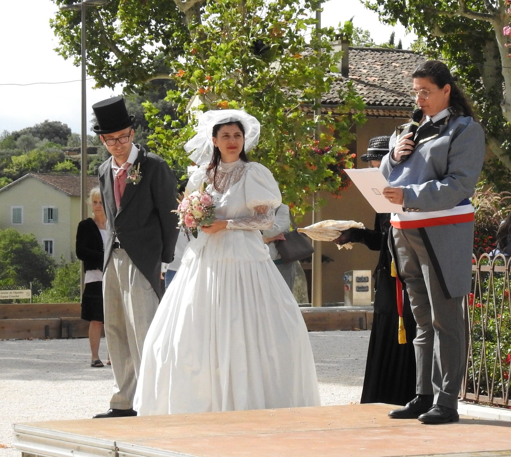
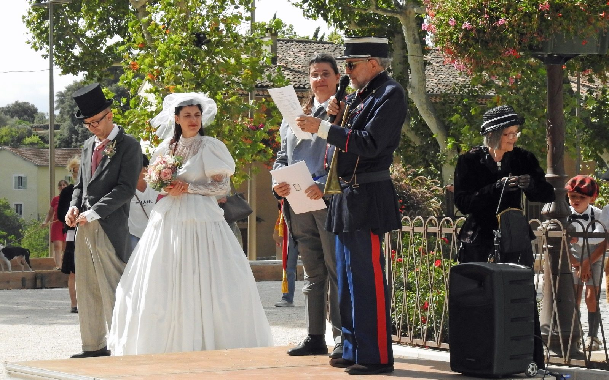
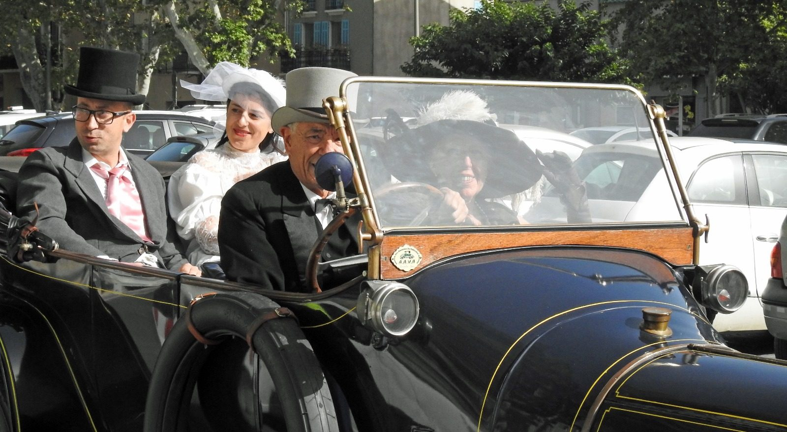
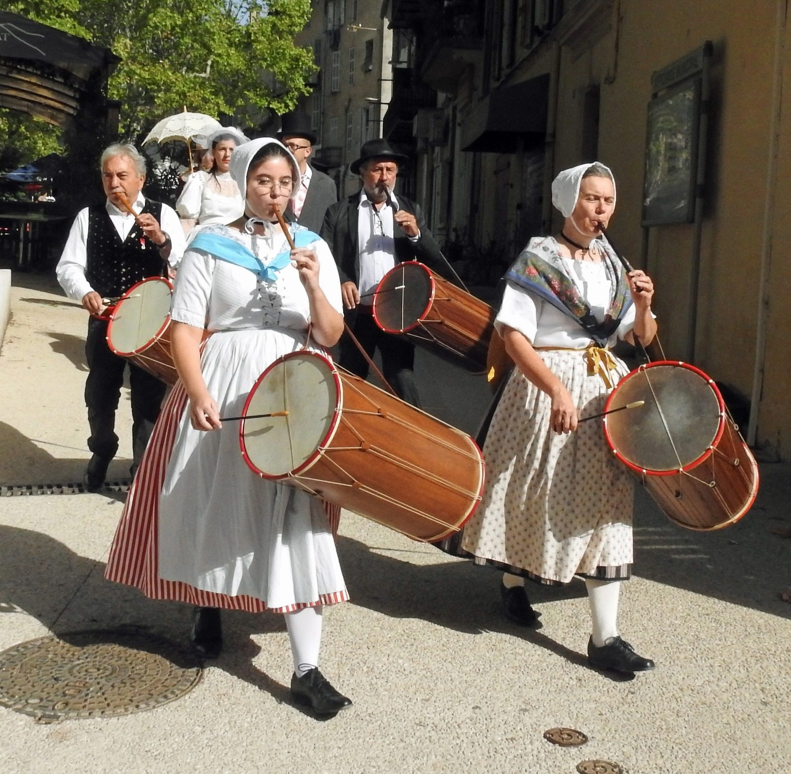
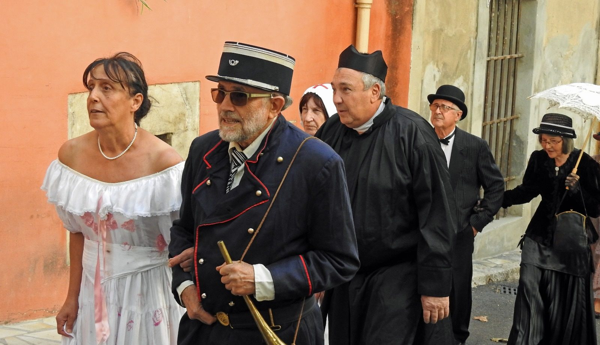
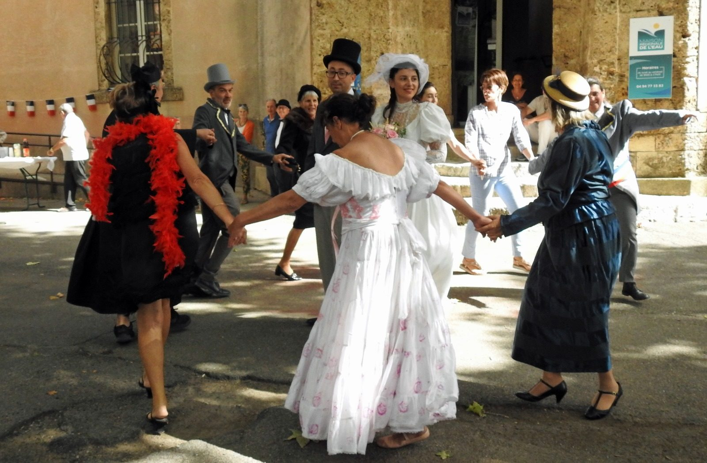

Le mariage de la Rosière
Tous les trois ans, une vieille coutume barjolaise est ravivée : le mariage de la Rosière. Un riche Barjolais avait fait don de sa fortune pour que chaque année la plus méritante des jeunes filles puisse avoir une dot.
Cette tradition est maintenue avec des voitures anciennes et des costumes d’époque.






